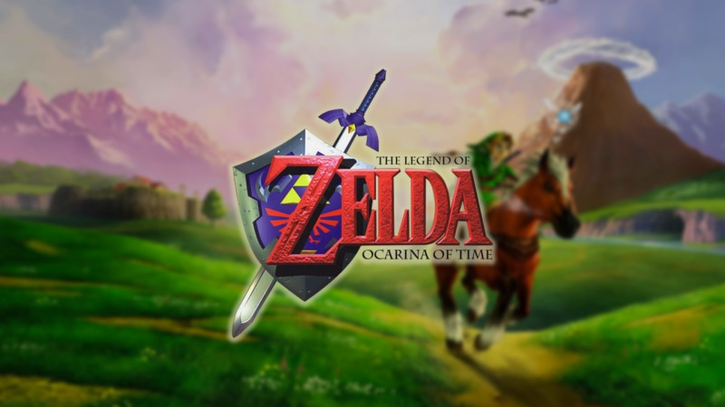

The Legend of Zelda Ocarina of Time
La saga de zelda consta de una gran fama desde los tiempos de la NES, pero para muchos, este es el mejor juego de la saga, siendo este el primer juego de la saga en 3D, y siendo un juego que marcó un antes y un después en la historia de los videojuegos.